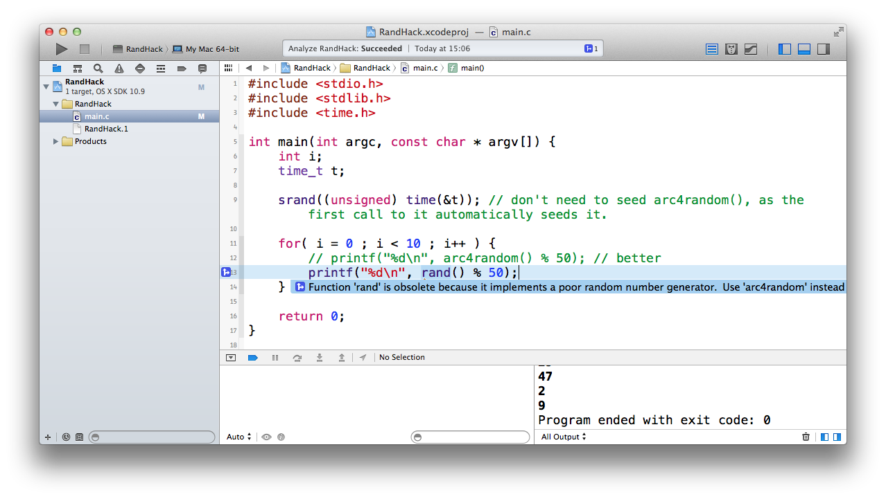
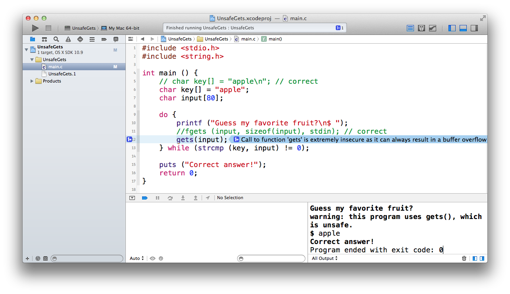

Exploring C vulnerabilities
with the
Clang Static Analyzer
Paul Nechifor
Valentin Schipor
Contents
- Overview
- Usage
- Cases
- Comparisons
1. Overview
LLVM Compiler Infrastructure
- Open source project developed by Apple, Google, and others.
- Collection of modular compiler and tool-chain technologies.
Core technologies:
- LLVM IR (intermediate representation)
- machine independent assembly language
- Optimizer and code generator for LLVM IR.
- Clang.

(from the AOSA book)
Clang
- A C language family front-end for LLVM.
- Compatible with GCC.
- Less CPU and memory intensive at compiling.
- Produces marginally less optimal code.
2. Usage
Clang Static Analyzer
- An analyzer implemented as a C++ library.
- Has 72 checkers so far (with many errors for each).
- Can detect complex behavior, not just pattern matching.
- Very powerful API for writing own checkers în C++.
- Short and specific error messages with clear markings.
- Fixit hints.
Used from:
- the
clangcommand (single unit); - the standalone tool (entire project builds);
- Xcode IDE on Mac;
- third-party projects (AppCode etc).
clang --analyze
Analyzes a specific file with its dependences.
Also outputs a p-list file (XML serialization).
List the checkers:
$ clang -cc1 -analyzer-checker-help
Use a specific checker:
$ clang -cc1 -analyze -analyzer-checker=core.DivideZero test.c
scan-build
A command line tool which scans an entire build.
Uses the makefile of the project to identify what needs to be analyzed.
As simple as scan-build -k make instead of make.
scan-view
Opens the results in a browser.
SCM integration
Example Git pre-commit hook:
$ cat > .git/hooks/pre-commit #!/bin/sh scan-build --status-bugs -k make $ chmod +x .git/hooks/pre-commit
Xcode: proprietary Apple IDE which integrates Clang.
Clang Static Analyzer settings in Xcode.
AppCode: another Mac IDE which uses Clang.
3. Cases
1. Stream operations
int main(int argc, char *argv[]) {
FILE* f = fopen("file.txt", "w");
if (argc > 5) {
fputc('c', f);
fclose(f);
} else {
return 0;
}
fclose(f);
return 0;
}
$ clang -cc1 -analyze -analyzer-checker=experimental.unix.Stream 06.c
06.c:9:16: warning: Opened File never closed. Potential Resource leak.
return 0;
^
06.c:11:5: warning: Try to close a file Descriptor already closed.
Cause undefined behaviour.
fclose(f);
^~~~~~~~~
2 warnings generated.
2. Stack leak
char const *p;
void leakStack() {
char str[] = "A string";
p = str;
}
02.c:6:7: warning: Address of stack memory associated with local
variable 'str' is still referred to by the global variable
'p' upon returning to the caller. This will be a dangling
reference
p = str;
^
1 warning generated.
3. Assignment in loop condition
int findChars(char* str, char c) {
int n = 0;
int i = 0;
char a;
while (a = str[i++]) {
if (a == c) {
n++;
}
}
return n;
}
$ clang -pedantic -fixit 03.c
03.c:8:14: warning: using the result of an assignment as a condition
without parentheses [-Wparentheses]
while (a = str[i++]) {
~~^~~~~~~~~~
03.c:8:14: note: place parentheses around the assignment to silence this
warning
while (a = str[i++]) {
^
( )
03.c:8:14: note: use '==' to turn this assignment into an equality comparison
while (a = str[i++]) {
^
==
1 warning generated.
4. vfork
int main() {
pid_t pid = vfork();
if (pid == 0 ) /* child */ {
exit(0);
}
}
$ clang -cc1 -analyze -analyzer-checker=experimental.security.SecuritySyntactic 05.c
05.c:7:17: warning: Call to function 'vfork' is insecure as it
can lead to denial of service situations in the parent
process. Replace calls to vfork with calls to the safer
'posix_spawn' function
pid_t pid = vfork();
^~~~~
1 warning generated.
vfork:
The vfork() function has the same effect as fork(), except that the behavior is undefined if the process created by vfork() either modifies any data other than a variable of type pid_t used to store the return value from vfork(), or returns from the function in which vfork() was called, or calls any other function before successfully calling _exit() or one of the exec family of functions.
5. Memory leak/
Dereference of null pointer
6. Insecure PRNG
7. Buffer overflow
4. Comparisons
Better errors than GCC
$ gcc-4.2 t.cc t.cc: In function 'void test(foo*)': t.cc:9: error: no match for 'operator+' in '(((a*)P) + (*(long int*)(P->foo::<anonymous>.a::_vptr$a + -0x00000000000000020)))->a::bar() + * P' t.cc:9: error: return-statement with a value, in function returning 'void' $ clang t.cc t.cc:9:18: error: invalid operands to binary expression ('int' and 'foo') return P->bar() + *P; ~~~~~~~~ ^ ~~
Compared to Coverty & Fortify
- Fortify - 1924 issues (almost all false positives).
- Clang Static Analyzer - 62 issues (a few false positives).
- Coverty - 118 (fewest false positives)
(Tested on the curl source code on daniel.haxx.se.)
Advantage of being full-stack
For example, CppCheck skips includes enclosed in <> (platform specific).
Clang Static Analyzer (being based on Clang) can perform more advanced checks.
Annotations
Unlike CppCheck, it supports some GCC annotations such as notnull.
int bar(int*p, int q, int *r) __attribute__((nonnull(1,3)));
int foo(int *p, int *q) {
return !p ? bar(q, 2, p)
: bar(p, 2, q);
}
Possible improvements
- Needs to mature (it's considered a work-in-progress).
- It is meant for vulnerabilities & bugs and doesn't cover style issues.
- Checker API is very advanced but hard to get started with.
int i = 0;
for (i = 0; i < 100; i++);
printf("%d\n", i);